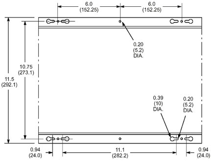
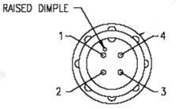
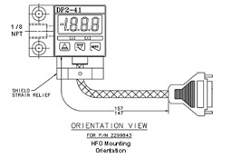
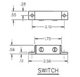
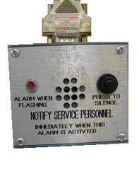
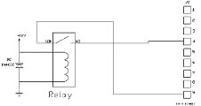
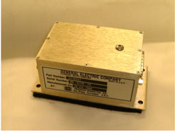
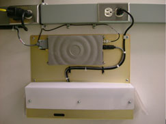

Operating Documentation
Direction 5500113, Rev# 3
Discovery MR450 1.5T Service Methods
Module Version 4.0, Version Date 5/3/10
Operating Documentation |
Table 1: Magmon3 Mechanical Specifications
| Parameter | Specification | ||
|---|---|---|---|
| Dimensions | Height: 10.0 in (254 mm) Width: 15.0 in (381 mm) Depth: 3.0 in (76 mm) | ||
| Weight | 8 pounds (3.6 kg) | ||
| Mounting | Wall mount; For systems with GE-supplied MDP, this unit mounts
next to it.
| ||
| Service Clearance | Maintain 12-inch (305 mm) clearance above, below and on both sides of the unit. |
Illustration 1: Magmon3 Dimensions

| NOTE: | All dimensions in this diagram are in inches. All bracketed () dimensions are in millimeters. |
Table 2: Magmon3 Environmental Specifications
| Parameter | Specification |
|---|---|
Operating Temperature Non-Operating Temperature | 0 to 40 Degrees C (32 to 104 Degrees F) -34 to 50 Degrees C (-29 to 122 Degrees F) |
| Temperature Change | 5 Degrees C / Hr |
Operating Relative Humidity Non-Operating Relative Humidity | 10 to 80% (non-condensing) 10 to 90% (non-condensing) |
| Magnetic Field | < 100 gauss |
| Altitude | -30 meters to 2133 meters; above sea level |
Table 3: Magmon3 Electrical Specifications
| Parameter | Specification |
|---|---|
| Input Voltage | 100 – 120 Vac or 200 – 220 Vac (auto switching) |
| Line Frequency | 50 or 60 Hz (auto switching) |
| Nominal Current | 0.5 amperes |
Table 4: Water Flow / Temperature Meter Mechanical Specifications
| Parameter | Specification | ||
|---|---|---|---|
| Dimensions | Height: 2.75 in (69.9 mm) Length: 3.70 in (94 mm) Depth: 2.0 in (50.8 mm) | ||
| Weight | 2.75 pounds (1.3 kg) | ||
| Mounting | Horizontal on any vertical surface.
| ||
| Maximum Fluid Pressure | 200 psi | ||
| Maximum Fluid Temperature | 225 Degrees F (107.2 Degrees C) | ||
| Inlet / Outlet Piping | ½-inch NPT × 5-inch long brass pipe.
| ||
| Non-Wetted Materials Composition | Epoxy, Lexan, and PVC | ||
| Wetted Materials Composition | 316 stainless steel, Buna-N, Delrin, Acetal Copolymer | ||
| Flow Direction | Operates with flow from either direction. | ||
| Mounting | Horizontal on any vertical surface with piping located at top.
See Illustration 2.
|
Illustration 2: Flow Meter Mounting Orientation

Table 5: Water Flow / Temperature Meter Environmental Specifications
| Parameter | Specification |
|---|---|
Operating Temperature Non-Operating Temperature | 0 to 40 Degrees C (32 to 104 Degrees F) -34 to 50 Degrees C (-29 to 122 Degrees F) |
| Temperature Change | 5 Degrees C / Hr |
Operating Relative Humidity Non-Operating Relative Humidity | 10 to 80% (non-condensing) 10 to 90% (non-condensing) |
| Magnetic Field | < 10 gauss |
| Altitude | -30 meters to 2133 meters; above sea level |
Table 6: Water Flow / Temperature Meter Electrical Specifications
| Parameter | Specification |
|---|---|
| Input Voltage | +12 to 35 Vdc, < 25 ma |
| Transmission Distance | < 200 feet (6096 cm) |
| Output Voltage (analog) | 0 to 5 Vdc, for both flow and temperature |
| Calibrated Flow Range | 0 to 5 gpm (0 to 18.9 lpm) |
| Calibrated Temperature Range | 0 to 100 Degrees F (0 to 38.8 Degrees C) |
| Accuracy | ± 2% of Range |
| Repeatability | 0.5% of Range |
| Resolution | Infinite |
| Response Time (Flow Time) | 2 seconds to 90% step change |
| Calibration | Factory-calibrated, no service calibrations required |
Illustration 3: Electrical Connections

Pin 1: + Positive DC Supply
Pin 2: Common Ground
Pin 3: Flow Sensor Analog Output
Pin 4: Temperature Sensor Analog Output
| NOTE: | Out of Catalog Item – Manufacturer Name: SUNX The manufacturer is responsible for the design and specifications of this unit. Any changes to specs can be viewed on their website: http://www2.sunx.co.jp/english/productindex.jsp (search for model DP2-41N). |
Table 7: Pressure Transducer Mechanical Specifications
| Parameter | Specification |
|---|---|
| Application | For Air or Non-corrosive gases |
| Dimensions | Width: 1.181 in (30 mm) Height: 1.760 in (44.7 mm) Depth: 1.378 in (35 mm) |
| Weight | 4.2 ounces (120 grams) |
| Pressure Port | ⅛-inch Female NPT (port orientation defined by GE part number) |
| Pressure | Positive Pressure Measurement |
| Rated Pressure Range | 0 to 14.5 psi (0 to 100 kPa) |
| Resolution | 0.015 psi (0.1 kPa) |
| Max Pressure | 71 psi (490 kPa) |
Table 8: Pressure Transducer Environmental Specifications
| Parameter | Specification |
|---|---|
Operating Temperature Non-Operating Temperature | -10 to 50 Degrees C (32 to 104 Degrees F) -10 to 60 Degrees C (-29 to 122 Degrees F) |
Operating Relative Humidity Non-Operating Relative Humidity | 35 to 85% (non-condensing) 35 to 85% (non-condensing) |
Table 9: Pressure Transducer Electrical Specifications
| Parameter | Specification |
|---|---|
| Input Voltage | 12 to 24 Vdc + 10% and – 15% |
| Ripple P-P | < 10 % |
| Analog Voltage Output | 1 to 5 Vdc (NPN open collector transistor) |
| Response Time | < 2.5 milliseconds |
| Short Circuit Protection | Incorporated |
Table 10: Pressure Transducer Product Features
| Feature | Description |
|---|---|
| 3.5-Digit Red LED Display | 0.394 inch (10 mm) high characters The unit displays measured pressure, settings, error messages and key-protected status. |
| Displayable Pressure Range | -0.725 to 14.5 psi (-5.0 to 100 kPa) |
| Sample Rate | 4 times / second |
| Analog Bar Display | LED Bar Display in steps of 10% full scale |
| Operation Indicators | |
Comparative Output 1 Comparative Output 2 | Orange LED illuminates when Output 1 is ON Green LED illuminates when Output 2 is ON |
Table 11: Pressure Transducer Electrical Connections – DB-9 Female
| Pin Number | Signal Name |
|---|---|
| 3 | Common Ground |
| 6 | Analog Output Signal |
| 8 | +12 Vdc input |
Illustration 4: HFO Mounting Orientation

Illustration 5: LCC Mounting Orientation

The reed switch is used to detect the presence of the magnetic field on the MRI Scanner. The reed switch contacts are normally CLOSED when in the presence of a magnetic field. Loss of magnetic field or an unplugged cable will result in OPEN contacts.
| NOTE: | The magnet monitor does not initiate any alarms with the change in state of the reed switch. Magnet Monitor kits manufactured for the DV platform systems after March 2010 do not include the reed switch. |
Table 12: Reed Switch Mechanical Specifications
| Parameter | Specification |
|---|---|
| Dimensions |  |
| Mounting | Attaches to rear pedestal with cable tie wraps. |
Table 13: Reed Switch Environmental Specifications
| Parameter | Specification |
|---|---|
Operating Temperature Non-Operating Temperature | 10 to 70 Degrees C (50 to 158 Degrees F) -34 to 70 Degrees C (-29 to 158 Degrees F) |
Operating Relative Humidity Non-Operating Relative Humidity | 10 to 80% (non-condensing) 10 to 90% (non-condensing) |
| Altitude | -30 meters to 2133 meters; above sea level |
Table 14: Reed Switch Electrical Specifications
| Parameter | Specification |
|---|---|
| Switch Contacts – Maximum Voltage | 30 Vdc |
| Switch Contacts – Maximum Current | 0.25 Amps dc |
| Initial Resistance | .25 ohms |
| Voltage Hold off | 200 Vdc |
| Watts – Maximum | 3.0 W. |
| Contact Operation | SPST – Normally Closed |
The remote alarm box is used on HFO and 7.0T systems. It is optional for all other systems.
Table 15: Remote Alarm Box Mechanical Specifications
| Parameter | Specification |
|---|---|
| Dimensions | Width: 3 in (76.2 mm) Length: 3 in (76.2 mm) Depth: 1.5 in (38.1 mm) |
| Mounting | Near the Operator Workspace Table; in view of the operator. Table top surface or wall mount surface with Velcro. |
Illustration 6: Remote Alarm Box

Table 16: Remote Alarm Box Environmental Specifications
| Parameter | Specification |
|---|---|
Operating Temperature Non-Operating Temperature | 10 to 40 Degrees C (50 to 104 Degrees F) -34 to 50 Degrees C (-29 to 122 Degrees F) |
| Temperature Change | 5 Degrees C / Hr |
Operating Relative Humidity Non-Operating Relative Humidity | 10 to 80% (non-condensing) 10 to 90% (non-condensing) |
| Noise | < 50 dB |
| Magnetic Field | < 100 gauss |
| Altitude | -30 meters to 2133 meters; above sea level |
Table 17: Remote Alarm Box Electrical Specifications
| Parameter | Specification |
|---|---|
| Input Voltage | 12 Vdc ±10 % |
| Transition Time | Rise time of 10 microseconds or less Fall time of 1 millisecond or less |
| Output Relay Contacts | 1 ampere at a maximum 120 Vac rms |
Table 18: Remote Alarm Box Electrical Connections
| Pin | Signal |
|---|---|
| Input Connector J1; DB-9 Pin; Male | |
| 2 | 12 Vdc |
| 9 | Common Ground |
| Output Connector J2; DB-9; Female | |
| 4 | Relay Contact (Normally Open Contact) |
| 9 | Relay Contact Common |
Illustration 7: Output Relay and Connector Schematic

Table 19: Remote Alarm Box Functional Specifications
| Device | Parameter | Specification |
|---|---|---|
| Audible Device | Audio Tone Audible Level Pulsing Frequency | Frequency Range 1000 to 3000 Hz 50 dBA to 90 dBA; measured 1 meter from audible device. Pulse On / Off at a rate of 1 Hz ± 20%. |
| Visual Indicator | Type Color Intensity Pulsing Frequency Reset Function | LED Red Noticeable at 20 feet with a conical viewing angle of ± 5 degrees. Pulse On / Off at a rate of 1 Hz ± 20%. When the 12 Vdc input signal is removed, then the LED will be extinguished. |
| Output Relay | Non Alarm Mode Alarm Mode | Contact closure when 12 Vdc is applied to input J1 pin 2 N/O Contact when 12 Vdc is removed from input J1 pin 2 |
| Silence Button | Alarm Mode | When depressed will silence the audible device when in alarm. |
The RUO Pre-Amplifier is a Dual Channel differential input, single ended output device. The RUO Pre-Amplifier also incorporates the necessary interconnections to route stimulus currents to the sensors located in the Coldhead and Magnet Sleeve.
Illustration 8: RUO Pre-Amplifier

Table 20: RUO Pre-Amplifier Mechanical Specifications
| Parameter | Specification |
|---|---|
| Dimensions | Width: 2 in (50.8 mm) Length: 3.75 in (95.25 mm) Depth: 1.5 in (38.1 mm) |
| Weight | 5 ounces (142 grams) |
| Mounting | Surface mount with Velcro; On top of the magnet near the Coldhead. |
Table 21: RUO Pre-Amplifier Environmental Specifications
| Parameter | Specification |
|---|---|
Operating Temperature Non-Operating Temperature | 0 to 40 Degrees C (32 to 104 Degrees F) -34 to 50 Degrees C (-29 to 122 Degrees F) |
| Temperature Change | 5 Degrees C / Hr |
Operating Relative Humidity Non-Operating Relative Humidity | 10 to 80% (non-condensing) 10 to 90% (non-condensing) |
| Noise | < 50 dB |
| Magnetic Field | < 1500 gauss |
| Altitude | -30 meters to 2133 meters; above sea level |
Table 22: RUO Pre-Amplifier Electrical Specifications
| Parameter | Specification |
|---|---|
| Input Voltage | ± 12 Vdc |
| Gain per Channel | 65 ± 1% |
| Channel to Channel Isolation | ≥ 60 dB |
| Output Noise | ≤ 50 microvolts rms |
| Bandwidth | 3 dB bandwidth > 10 KHz |
Table 23: Input Connector J1; To/From Sensors; Type DB15 pin; Female
| Pin | Signal Description | Signal Level |
|---|---|---|
| 1 | Stage 1 Diode Positive | 10 microamp constant current |
| 2 | Stage 1 Diode Negative | |
| 3 | Stage 2 Diode Positive | 10 microamp constant current |
| 4 | Stage 2 Diode Negative | |
| 5 | RUO (1) Source Positive | 10 microamp constant current |
| 6 | RUO (1) Source Negative | |
| 7 | RUO (1) Signal Positive | 0 to ± 20 millivolts dc |
| 8 | RUO (1) Signal Negative | |
| 9 | No Connection | n/a |
| 10 | No Connection | n/a |
| 11 | No Connection | n/a |
| 12 | RUO (2) Source Positive | 10 microamp constant current |
| 13 | RUO (2) Source Negative | |
| 14 | RUO (2) Signal Positive | 0 to ± 20 millivolts dc |
| 15 | RUO (2) Signal Negative |
Table 24: Output Connector J2; To/From MagMon; Type DB15 pin; Male
| Pin | Signal Description | Signal Level |
|---|---|---|
| 1 | Stage 1 Diode Positive | 10 microamp constant current |
| 2 | Stage 1 Diode Negative | |
| 3 | Stage 2 Diode Positive | 10 microamp constant current |
| 4 | Stage 2 Diode Negative | |
| 5 | RUO (1) Source Positive | 10 microamp constant current |
| 6 | RUO (1) Source Negative | |
| 7 | RUO (1) Output | 0 to ± 2.5 Vdc |
| 8 | Signal Ground | 0 Vdc |
| 9 | No Connection | n/a |
| 10 | No Connection | n/a |
| 11 | No Connection | n/a |
| 12 | RUO (2) Source Positive | 10 microamp constant current |
| 13 | RUO (2) Source Negative | |
| 14 | RUO (2) Output | 0 to ± 2.5 Vdc |
| 15 | RUO (2) Signal Negative | 0 Vdc |
| NOTE: | Out of Catalog Item – Manufacturer: Powerware The manufacturer is responsible for the design and specifications of this unit. Any changes to specs can be viewed on their website: http://powerquality.eaton.com/Products-services/legacy/9120-info.asp |
The Powerware 9120 UPS provides maximum power quality and backup power protection in the 700 - 3000 VA range and is the ideal power management solution for networks, Web servers and telecommunications equipment.
While offering basic surge protection and backup power, the Powerware 9120 UPS additionally offers the best UPS power protection against all nine common power quality problems.
Table 25: UPS Product Snapshot
| Parameter | Specification |
|---|---|
| Model Number | PW9120/700 |
| Power Rating | 700 VA |
| Voltage | 120 and 230 V |
| Frequency | 50 and 60 Hz auto sensing |
| Configuration | Tower |
| Input Connection | 5-15P |
| Output Receptacles | (4) 5-15R |
| Dimensions | Height: 9.6 in (243 mm) Width: 6.2 in (158 mm) Depth: 16.2 in (412 mm) |
| Weight | 29 lbs (13.2 kg) |
Table 26: UPS Electrical Input
| Parameter | Specification |
|---|---|
| Nominal Voltage | 120 Vac and 230 Vac |
| Input Voltage Range | 120V: 80 –144 Vac 230V: 120/140/160-276 Vactd> |
| Input Power Factor | >.95% |
| Operating Frequency | 50/60 Hz, Auto-sensing |
| Frequency Range | 45 - 65 Hz |
| Input Protection | Fuse or circuit breaker |
Table 27: UPS Electrical Output
| Parameter | Specification |
| On Utility Voltage Regulation | ±2% of nominal |
| On Battery Voltage Regulation | ±3% of nominal |
| Nominal Output Voltage | Same as selected input voltage |
| Output Voltage Waveform | Sine Wave |
| Output Voltage Distortion | <3% THD |
| Output Protection | Electronic overload sensing, and circuit breaker protection |
| Efficiency | Online Mode: >86% Hi-Efficiency Mode: >90% |
Table 28: UPS Battery
| Parameter | Specification |
|---|---|
| Internal Battery Type | Sealed, lead-acid; maintenance free |
| EBM Battery Type | Sealed, lead-acid; maintenance free |
| On Battery Runtimes | See Powerware website: http://www.powerware.com/UPS/#battery |
| Battery Replacement | Hot-swappable internal and external batteries |
| Recharge Time | < 4 hours to 90% capacity |
| Start-On-Battery | Allows start of UPS without utility input |
Table 29: UPS Communcations
| Parameter | Specification |
|---|---|
| User Interface | LCD Status screen |
| Audible Alarms | UPS alarm conditions, including: On-Battery, Low Battery, Overload, UPS Fault |
| Network Transient Protector | In and out jack for all models. UL497A tested. |
| REPO Port | Meets NEC Code 645-11 intent and UL requirements |
| Communications | 1 RS232 Serial Port; 1 communications slot; 1 USB port |
| Communications Cable | 6-foot communications cable included |
| Power Management Software | Powerware Software Suite CD (http://www.powerware.com/Software/Suite.asp) |
Table 30: UPS General
| Parameter | Specification |
|---|---|
| Topology | True online, double-conversion |
| Diagnostics | Full system self-test on power up |
| UPS Bypass | Automatic on Overload or UPS failure <4ms |
| Transfer Time to Battery | 0 msq |
| Overload Capacity | 125% for 10 minutes before transfer to bypass. 150% for 10 seconds before transfer to bypass. |
Table 31: UPS Environmental and Safety Specifications
| Parameter | Specification |
|---|---|
| Safety Certifications | UL1778;cUL22.2 NO.107.1 |
| EMI Compliance | FCC Part 15, Class B (700-1500), Class A (2000-3000) 230 V, EN 50091-2 Class B (700-1500), Class A (2000-3000) |
| Operating Temperature | 0 Degrees to 40 Degrees C (32 to 104 F) |
| Storage Temperature | -15 Degrees to 50 Degrees C (5 to 122 F) |
| Storage Temperature | 0 Degrees to 25 Degrees C (32 to 77 F) |
| Relative Humidity | 0% to 95% non-condensing |
| Immunity | EEE C62.41, IEC 61000-4 -2, -3, -4, -5 |
| Network Transient Protector | UL497A |
| Audible Noise at 1 meter | 700-1000 VA: <45dB;1500 VA <50dB; 2000-3000 <52dB |
| Altitude | 3000m (10,000 ft) without deteriorating |
| NOTE: | Due to continuing product improvement programs, specifications are subject to change without notice. See http://powerquality.eaton.com/Products-services/legacy/9120-info.asp for the latest information. |
| NOTE: | Out of Catalog Item – Manufacturer Name: MultiTech The manufacturer is responsible for the design and specifications of this unit. These specifications are taken from the MultiModem® ZBA User Guide for Models MT5634ZBA–V.90, MT5634ZBA-V–V.90, MT5634ZBA–V.92, MT5634ZBA-V–V.92. |
Table 32: Global Modem Mechanical Specifications
| Parameter | Specification |
|---|---|
| Dimensions | Width: 4.25 in (10.8 cm) Length: 5.8 in (14.8 cm) Depth: 1.15 in (2.9 cm) |
| Weight | 8 ounces (224 grams) |
| Mounting | Near the Magnet Monitor Unit. Table top surface or wall mount surface with Velcro. |
| Connectors | DB25F RS232C Connector; 2 RJ-11 Telephone jacks; power jack |
Table 33: Global Modem Environmental Specifications
| Parameter | Specification |
|---|---|
| Temperature | 0 to 50 Degrees C (32 to 122 Degrees F) |
| Relative Humidity | 20 to 90% (non-condensing) |
| Magnetic Field | < 100 gauss |
| Altitude | -30 meters to 2133 meters; above sea level |
Table 34: Global Modem Electrical Specifications
| Parameter | Specification |
|---|---|
| Line Voltage | 100 to 240 Vac; universal power supply |
| Line Frequency | 50/60 Hz; universal power supply |
| Power Consumption | 9 Vdc; 300 milliamps maximum |
Table 35: Global Modem Features
| Parameter | Specification |
|---|---|
| Indicators | LEDs for Transmit Data, Receive Data, Carrier Detect, 56k bps, 33.6k bps, 14.4k bps, Off Hook, Terminal Ready, Error Correction, FAX |
| Manual Control | Power Switch |
| Speaker | Internal Speaker for call progress monitoring |
| Diagnostics | Power-on self test, local analog loop, local digital loop, remote digital loop. |
| NOTE: | Out of Catalog Item - Manufacturer: Stellar
Satellite Communications The manufacturer is responsible for the design and specifications of this unit. Any changes to specs can be viewed on their website. |
The ST2500 is a highly versatile smart modem, with low-power modes; extensive serial, digital and analog I/O; and an application processor capable of hosting customer-written "C" code. It is available with optional enclosure and 12-channel GPS.
Illustration 9: Stellar ST2500 Satellite Modem

Table 36: Satellite Modem Specifications
| Parameter | Specification |
|---|---|
| General | Dimension (OEM board): 90 × 150 × 32 mm Dimension (Case): 222 × 110 × 35 mm LED Indicators: Receive, Transmit, Queue ORBCOMM Hybrid Mode: Yes |
| Transmit Frequency | 148 to 150.05 MHz |
| Transmit Power | 5 Watts |
| Receive Frequency | 137 to 138 MHz |
| Dynamic Range | 40 dB minimum |
| Sensitivity | Minimum BER: E-5@ -118 dBm Typical BER: E-5@ -120 dBm |
| Application Interfaces | Main Serial: RS232 Aux1 Serial: RS232 to Sensor Aux2 Serial: TTL/RS232 to GPS, GSM Modem Digital Inputs: 6 optically isolated Digital Outputs: 6 optically isolated Analog Inputs: 5 (0 to 3V, 10 bit) |
| Application Programming | Application Processor: Atmel Mega 128L Program Memory: 128K Flash Data Memory: 4K RAM, 4K EEPROM Programming Language: C Compiler: IAR or Imagecraft |
| Power Requirements | External: 9 to 36 VDC Battery: 8 or 12 VDC |
| Power | Transmit: 2.5 A max.@12v; 2.0 A max.@15v Receive: 90 mA Power Save Receive: 60 mA Sleep: 50 uA typical, 100 uA maximum |
| Environmental | Operating: -40°C to +85°C Shock & Vibration: SAE J1455 |
| Position Accuracy | GPS: < 5 m CEP (varies by GPS manufacturer |
| Options | Trimble LP 8-channel GPS or Fastrax 12-channel GPS (requires 3.3V Antenna). |
Illustration 10: Connection Diagram

For more information regarding ORBCOMM modems, contact the modem information line at 703-433-6520
Illustration 11: MRI Mobile Installation
